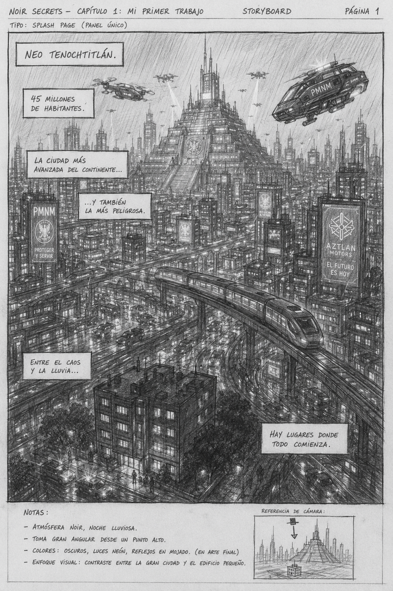
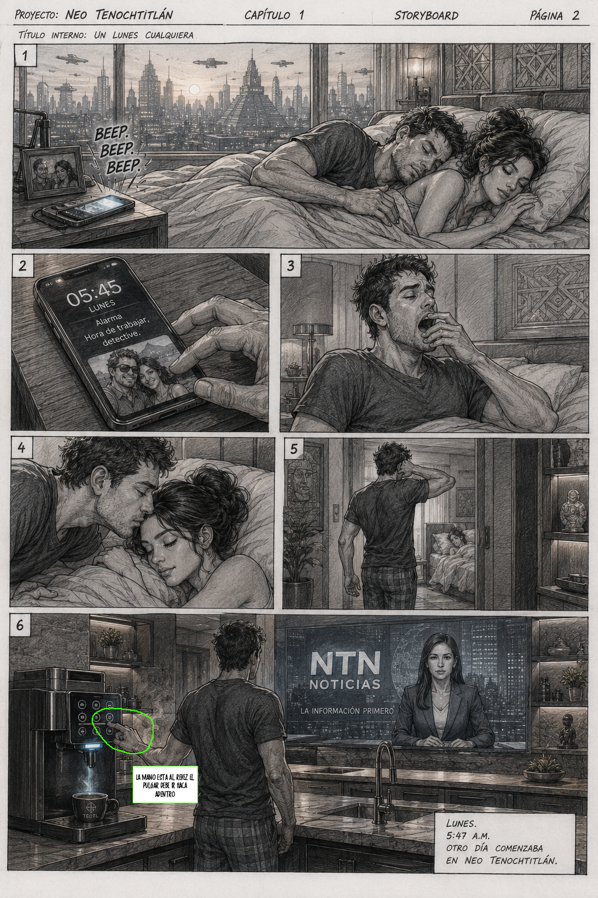
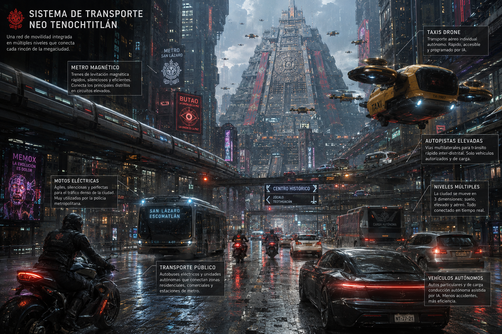
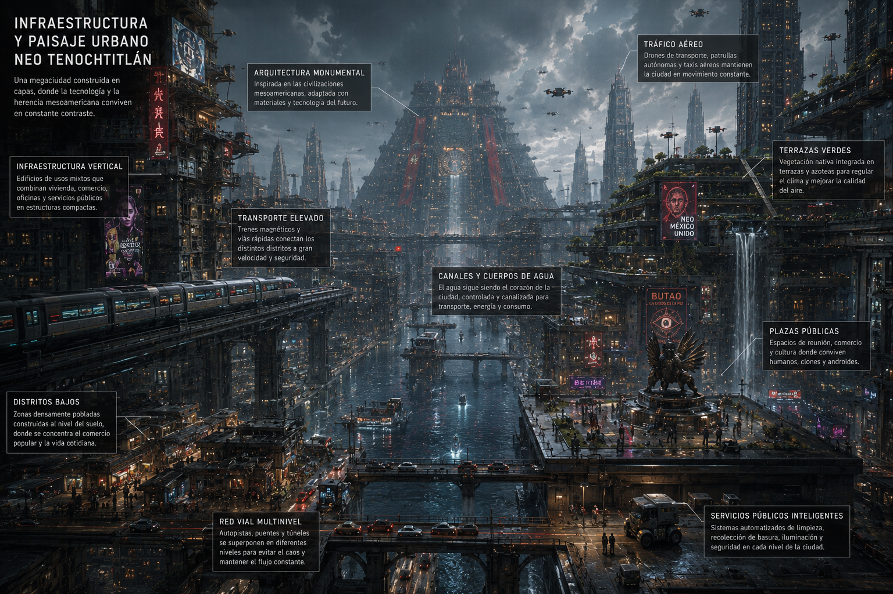
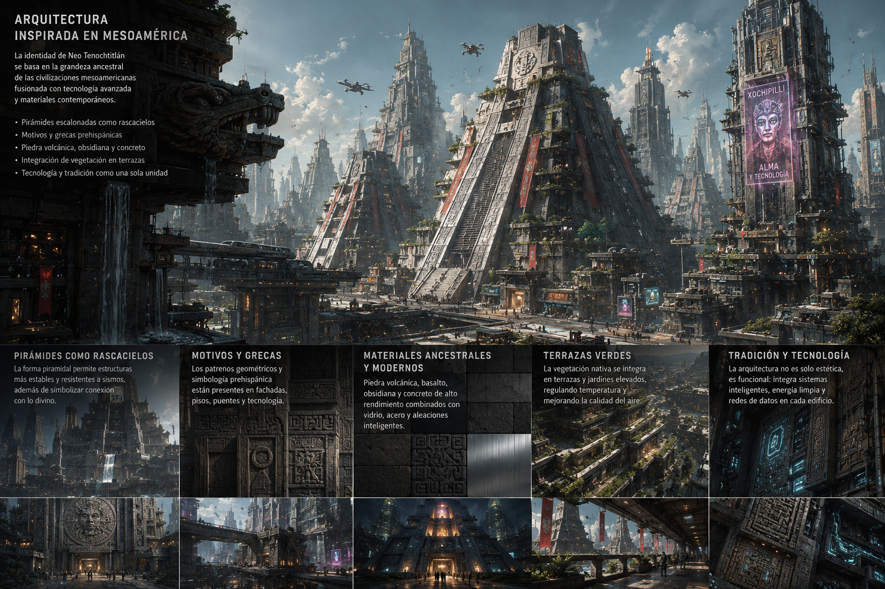

NEO-
TENOCHTITLAN
Neo Tenochtitlán es una megaciudad devorada por el neón, las drogas sintéticas y la desigualdad. Un lugar donde humanos, clones y robots conviven en una tensión constante a punto de romperse. Para el detective Samuel Podbielski y su veterano compañero Arturo Fernández, debería ser un lunes más. Pero todo cambia cuando son llamados a un departamento en el sector 7. El escenario es una pesadilla: una mujer joven, embarazada es encontrada brutalmente asesinada. El detalle más aterrador: el feto ha sido extraído a la fuerza y no hay rastro de él. La única pista es un repartidor de comida que fue visto entrando al edificio. Pero cuando los detectives lo encuentran, el sospechoso es un clon con memorias falsas implantadas. Podbielski y Fernández se dan cuenta de algo escalofriante: el asesino no actuó solo. Detrás de este crimen hay una organización con fines siniestros que trata de controlar el destino de la humanidad.
Volver a proyectos

En este universo, el imperio azteca nunca cayó, evolucionando hacia una megalópolis distópica gobernada por corporaciones y antiguos dioses cibernéticos. Una mezcla única de estética prehispánica y tecnología cyberpunk.


